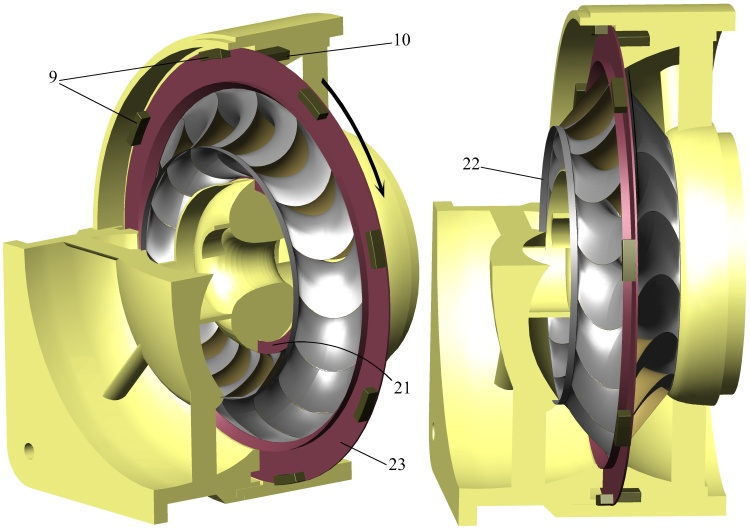

The rotor is akin to the one shown in figure 5. The engine body is composed of an exterior casing 38 and a central body 40 connected by a stator 39. The propeller blades are part of an external rotor 37 that has an internal stage of conventional blades 35 to assist the compression and another stage of conventional turbine blades 36 which drive the whole external rotor with the exhaust gasses. In this case, the rotor built with dynamic symmetry foils 15 is only used for compression while the output power is obtained with the blades 36 of the exterior rotor 37. The exterior rotor 37 and the dynamic symmetry foils rotor 15 are counter rotating. Fuel and electrical ignition are supplied to the combustion chamber 31 through the conduct 33. The engine can be started with the injection of compressed air from a bottle into the combustion chamber through conduct 33 and, once started, the same conduct 33 can be used to refill the same bottle with compressed air taken from the combustion chamber inlet. The flow of clean air 14 is partially accelerated and compressed by the blades 35 of the exterior rotor 37 and reaches the rotor 15 passing through its compression passages. It then exits the rotor 15 and enters the compression spiral volute 30 which leads it to the combustion chamber 31. After having thermal energy added to it, the flow exits the combustion chamber and enters the expansion spiral volute 32 which brings it up to the rotor 15. The gas passes through the expansion passages of the rotor 15 where it yields part of its energy. After leaving the rotor 15 it acts on the turbine blades 36 delivering its power to the exterior rotor 37 before finally exiting the engine at 20. Rotors intended for mixed flows are essentially equal to those intended for axial flows albeit the machine configuration does allow benefiting from the radial component of the flow in the compression or expansion flows.
Figure 11 shows the schematic of the previously described turbo-fan engine’s axial section. The engine can be started injecting compressed air from a bottle into the combustion chamber, which is external. The fresh air entering 14, passes through the compression passages of the rotor 15. The majority of the air is expelled at 48, obtaining thrust, whilst the rest of the pumped air is directed to the compression volute 30, and from there, up to the combustion chamber. After having thermal energy added to it, the air exits the combustion chamber and enters the expansion volute 32 which then conducts it up to the rotor 15. The gas passes through the expansion passages of the rotor 15 where it yields its energy and is finally exhausted to the exterior at 20. The air used for thrust 48, is forced to pass through a stator 49 before escaping the engine. Notice how the rotor has been described as a mixed flow one since this configuration does take advantage of the radial component of the compressing flow; that is, it moves away from the rotation axis while the expanding one circulates towards it. The next figures clearly show this rotor’s foil geometry which is designed to pump a great volume of air through its central zone while not giving it too much speed. Figure 12 shows perspectives of the joint between one dynamic symmetry passive surface and two dynamic symmetry active surfaces of the rotor 15 of figure 11. Notice the wideness of the compression passage with respect to the expansion one. The left view gives a better appreciation of the inlet zones from both the compression and expansion passages, while the right view gives a better appreciation of the outlet zones.
|
The radial flow can be considered a limit case of a mixed flow in which the net curvature of the flow is null and, thus, a radial rotor designed with the same techniques as a mixed one would be perfectly feasible. However, the design flexibility provided by the dynamic symmetry criterion allows for more advantageous radial flow solutions. As will be demonstrated in the following figures, it is possible to manufacture a dynamic symmetry foils rotor in which the compressing flow does not need to forcibly overcross the expanding flow, and in which it is unnecessary that the passages be completely shaped by the active and passive surfaces.
Figure 13 shows a schematic diagram for the axial section of a turbo-machine that uses a radial flow dynamic symmetry foils rotor 15 in order to exchange energy between two fluid currents. The figure also shows a perspective of a dynamic symmetry active surface 1 of that rotor. The paths of the expanding flow 2 and compressing flow 3 can be seen represented through of arrow strips. Notice that in the central area, both the expanding flow 2 and the compressing flow 3 circulate almost parallel without their paths ever crossing. The fluid being compressed enters the turbo-machine at 14, near the axis of rotation, continuing to the compression passages of the rotor 15 where it receives energy by radially circulating up to the volute 56 on the periphery. The expanding fluid arrives through volute 57, on the periphery, passes to the expansion passages of the rotor 15 where it yields its energy by radially circulating towards the rotation axis and finally leaves the turbo-machine at 20. Figure 14 shows perspectives of the rotor 15 from figure 13. One of the most differentiating characteristic of this radial flow dynamic symmetry foils rotor with respect to those intended for axial or mixed flows is that the compression and expansion passages are not sealed between the active and passive surfaces but rather one part of them must be sealed by the turbine housing, as can be seen at point 55 of figure 13. This is also a common characteristic in conventional radial turbo-machines. This area of the passages sealed by the housing coincides with the area in which the expanding flow 2 and the compressing flow 3 circulate in an almost parallel direction.
|
Dynamic symmetry foils rotors are also susceptible of being combined in multi compression-expansion stage constructive solutions as those shown in next figure.
|
Other
constructive details
|


 |
| FIG. 18 |
Figure 18 shows a perspective of a dynamic symmetry passive surface on which some appendages named assembly wings have been added to the free edges. These assembly wings are simply extensions of the surface structure that can be used in several ways according to the convenience of the application. They are present on the passive surface due to its free edges, but they could just as well be on the active one. They usually serve as bearings in order to transmit efforts to the turbo-machine structure into which the rotor is integrated, also as a surface on which to effect an airtight sealing, as a support for rotor driven accessories, or as assembly point for other elements. When integrating several rotors in the turbo-machine, it is probable that both the sealing and effort transmission takes place between these very rotors in addition to taking place between the rotor and the turbo-machine. Furthermore, the assembly wings will host the counterweights derived from the balancing operation of the rotor.
The following figure shows a perspective of a sectioned electric generator, useful in illustrating various aspects. The dynamic symmetry foils rotor intended for axial flows is equipped with assembly wings 22 which act as a bearing and airtight seal along with a support for an outer 23 and inner 21 ring.
Whilst, from an operative point of view, these rings are not essential, they become convenient due to the fact they are elements with a continuous structure and can therefore conform to more detailed designs requiring a single milling process. These rings could obviously be joined to the foils without requiring assembly wings. These rings can be used to perform the same functions as the assembly wings and, in particular, act as a chassis for the tuning of dynamic symmetry surfaces in demountable rotors. A reasonable technique in the building of demountable rotors intended for axial or mixed flows would be to use the set resulting from welding an active surface, with no assembly wings, and a passive surface, which does have assembly wings on its free edges, as a constructive element.
Additionally, the outer ring 23 contains the mobile electromagnetic elements 9 as accessories which interact with the fixed elements 10, embedded into the machine structure.
|  |
| FIG. 19 |
After hiding from view the rotor and its rings, a detailed view of the combustion chamber of that generator located in its central zone, is shown next. The air flow being compressed 3 enters the compression spiral volute after exiting the rotor compression passages and reaches, compressed, the combustion chamber where it receives thermal energy. Next, the hot gasses flow 2 is conducted from the combustion chamber towards the rotor expansion passages through the expansion spiral volute.
 |
| FIG. 20 |
 |
 |
Advantages
It is to be expected that these kind of designs present several
advantages such as eliminating the need of a shaft to transmit the power
from turbine to compressor, diminishing the length and weight of the
engine, rotors materials are better refrigerated allowing for greater
operational temperatures and a lower diluted air ratio, the
refrigeration process itself involves a heat recovery effect improving
overall thermal efficiency, the foils suffer less mechanical stresses
thanks to partial compensation of the fluid pressure on both sides of
its surfaces. The obligation to cross the compressing and expanding
fluids in the same rotor does not necessarily imply having to provide
notably larger sections than that of conventional rotors, since what is
sought and achieved with the dynamic symmetry is to exploit otherwise
unused spaces of conventional rotor blades, particularly if the use of
high pressure geometries is intended. It is also significant that the
lower inertia of the rotors allows for the injection of compressed air
directly into the combustion chambers as a starting procedure thus
allowing for the replacement of otherwise heavier and slower
conventional systems.When embracing the dynamic symmetry criterion, 2D classic design methodology is left aside in favour of more powerful modern engineering tools in order to concentrate the technological effort in the unconventional 3D geometries design of two warped foils and their later manufacture. Although this technology is at a very early development phase, it is necessary to mention that, apart from its operative advantages, a lot of trust has been put in the building technique of the rotors where joining two types of warped foils could constitute an important new step in the industrial process of gas turbine manufacturing.
|
|
Industrial
applicability
Whilst these claimed advantages are desirable in any gas turbine engine
application, the dynamic symmetry concept may be particularly useful in
low power turbines and micro-turbines, portable power generation units,
distributed electrical power generation, auxiliary engines for vertical
lift on VTOL aircrafts, primary generators in hybrid propulsion, quick
start turbine engines, turbo-blowers, etc.One promising application of this technology is found in military applications where the automated manufacturing of disposable dynamic symmetry foils rotors could lead to a new generation of very economic power plants intended for motorizing unmanned combat machines or cruise missiles. These kinds of platforms, designed for a single use or a limited operative life expectancy where maximum simplicity without renouncing to efficiency is pursued, would allow the reduction of costs of not only the production but also the preventive maintenance, reducing these operations only to the full replacement of rotors.
|
|
Comparison
with
the prior state of the art
It is well known that one of the most limiting factors in gas turbine
design is the high combustion temperature needed to achieve good
efficiency, although this adversely affects the materials resistance. In
order to solve this problem, apart from improving alloys, several
techniques whose purpose is to cool the blades from the hot gases have
been proposed, allowing them to work at higher temperatures. Systems
based on incorporating the blades with cooling circuits through
more or less complex channels in which a refrigerant fluid must
circulate already exist. Another system uses porous materials or
mechanizes orifices at strategic intervals in order to keep the blade
surface covered with a thin film of cold gas injected under pressure
from its core, isolating the blades from the high temperatures of
exhaust gases. There is yet another system which exploits the idea of
using the hollow
blades of a conventional axial turbine as a radial compressor forcing
the fresh air to circulate through its interior before entering the
combustor to later redirect the hot gases proceeding from the combustor
through a loop against the blades of the axial turbine. In this way, it
is possible to cool the turbine blades which act simultaneously as a
radial pump and axial motor.This hollow blade based system, although not exactly considered an antecedent, does show an important parallelism with the dynamic symmetry criterion due to the fact that the fresh compressed air is also in charge of directly refrigerating the rotor surfaces in contact with hot gases proceeding from the combustor, having it act as a pump and a motor at the same time. Nonetheless, the idea of conceiving a hollow blade as a conduct through which the air can circulate radially, although useful and very intuitive, imposes certain limitations that can end up being potentially inconvenient since it conditions the machine configuration where it forces the exit location of the compressed air flow towards the periphery of the rotor and, at the same time, the tubular geometry of the blades conditions the radial flow transitions to and from the rotor. These limitations can be solved thanks to the dynamic symmetry strategy which provides smooth inflow and outflow profiles without the need to add strange elements intended to eliminate discontinuities in the flow and, at the same time, allows for innovative constructive solutions with respect to hollow blades avoiding the constraints of radial compression and conventional shapes of existing blades.
|
|
Warning for bias of rejection to the unknown
Fear and scepticism are natural reactions to new ideas or radical
changes and can result in a misleading perception of a reality that is
usually much simpler than it first seems. All gas turbine engines have a
compressor, a hot gases turbine and, if circumstances permit, a cooling
and a heat recovery system to increase its efficiency. Dynamic symmetry turbines have the exact same elements, but thanks to
its innovative architecture, all those elements are integrated simply in
a lightweight and compact rotor. Based on this, dynamic symmetry has
never been conceived as a hypothetical technology, it is to say, it is not being researched to find out if it can work, but to find out the best way to make it work.
Nonetheless, during the dissemination phase of this technology, it has
been established that some people suffer from an immediate and unfounded
"rejection effect" when seeing the geometry of a dynamic symmetry foils
rotor for the first time. The operation of the rotors and curvature of
the surfaces, distant from conventional ones, can sometimes cause first
impressions to consider it something extraordinarily complex and that it
would probably present flow quality problems and make it hardly viable.
It is true that the passages through which the fluid circulates in a
dynamic symmetry foils rotor are enclosed by surfaces with a striking
warping that confer to the same capricious shapes.
 |
||||
| FIG. 38 |
FIG. 39 | FIG. 40 |
Different perspectives of one of these passages, bounded by surfaces with strange warping and tortuous shapes, are illustrated in the previous figures. At first sight, it could be intuited that such a geometry is unsuitable in obtaining a flow under optimal turbine working conditions.
 |
||
| FIG. 41 |
FIG. 42 |
The rotor depicted in the previous figures, corresponds to an absolutely conventional centrifugal compressor, and not a particularly modern one either, similar to those used in many small power gas turbines or in supercharging systems of explosion engines. Since it is conventional, seeing it does not cause the impression that flow quality problems should appear when fluid circulates through its passages. Figures 38, 39 and 40 do not correspond to the passage of a dynamic symmetry foils rotor but to the conventional centrifugal rotor previously shown. Despite the conventionality of its architecture, any expert knows that if it is poorly designed or simply operated outside its design parameters, it will also perform poorly.
| FIG. 43 |
FIG. 44 |
 |
||
| FIG. 45 |
FIG. 46 |
 |
| FIG. 47 |
Its physical viability has never been in question, but, as with any other novelty, uncertainties exist and a prudent approach requires conducting systematic research leading to quantitative results.
Simply put, detailed studies are planned that allow for the discovery of the best design practices when implementing the philosophy of dynamic symmetry in order to be able to leverage its advantages and come to grasp its limitations and peculiarities.
To associate a high degree of innovation with a high probability of malfunction without any explanation is, blatantly, an absurd behavioural predisposition. In the end, the good or bad functioning of a design will depend on the quality of the engineering work that has been invested in it, such holds for conventional turbine as well as non-conventional ones. For this reason, any expert studying the dynamic symmetry criterion for the first time, must be warned from the possibility of suffering this relatively common cognitive prejudice that triggers spurious conclusions not based on careful scientific analysis but on a subjective and hasty first impression of something that breaks out the established.
Although the dynamic symmetry criterion is intended to simplify and improve the construction of gas turbines, it must be kept in mind that the characteristics of dynamic symmetry foils can almost never be assimilated to a two-dimensional geometry, thus, its understanding requires a sufficiently developed spatial vision and a set of 3D engineering tools.
|
|
Current researches
Basic design considerations for a micro-turbine
One of the major current challenges in the gas turbine industry is the
production of very small power turbines capable of offering similar
efficiencies to that of large ones. The simplest micro-turbine has one
compression stage and one expansion stage coupled on the same axis. A
qualitative analysis of some features that would influence the design of
a micro-turbine equipped with a single dynamic symmetry foils rotor is
carried out with this premise. |
||
| FIG. 22 |
FIG. 23 |
Logically, the accessible part of the shaft resides in the air intake area protected from heat and the aggressive elements of exhaust gases. In addition, this allows for a better balancing of the rotor geometry where the pass-through section required for the intake nozzle, and for thermodynamic reasons, is smaller than that of the exhaust.
It should be remembered that both the pressure and suction surfaces simultaneously delimit the expansion and compression passages and, therefore, the geometry of any of them affects both types of passages. However, it is true that the compression passages are affected mainly by the curvature in a particular direction, whilst expansion passages are affected mainly by the curvature in the other direction, as shown in Figure 23.
The most energetic fluid flow is the one exiting the combustion chamber, reason by which the considerations carried out with respect to the main curvatures of the expansion passages will condition the rotation speed, speed to which the main curvatures of compression passages will subsequently have to be adapted.
The amplitude of the inlet section of the expansion passages will grow as the component parallel to the axis plane of the absolute velocity vector with which the gases leaving the combustor affects the expansion passages gets smaller. Although dynamic symmetry allows for a flexible design, in order to achieve less forced geometries, especially for the suction surface, it becomes convenient to provide a fairly wide entry section for the expansion passages. This is accomplished by making the angle of incidence of the gases from the combustor tangent enough to the turbine. This will also contribute to reduce the aerodynamic axial thrust corresponding to the expansion passages.
Once chosen the rotation speed depending on the expansion passages needs, the compression passages outlet usually results significantly narrow in comparison with the inlet. This is normally not a problem for the design since on the other side of that active surface area, the expansion passage is very thin and leads a small proportion of the expansion flow.
To achieve a not too high rotation speed in a turbine with a single expansion stage, which has to absorb all the power, working with high pressure geometries is needed, implying that the pass through area of the passages narrows towards its central part with respect to the inlet or outlet (fig. 50). This is achieved naturally by employing the dynamic symmetry strategy. Nonetheless, the design offers many degrees of freedom and it can be resorted to the centre widening technique in order to accommodate better the pass through section, as shown in Fig. 48 and 49.
 |
 |
|||
| FIG. 48 |
FIG. 49 | FIG. 50 |
The use of high pressure geometries would also involve, in general, the use of sharp leading edges. Although it is a decision that depends on fluid dynamics criteria, sharp edges can be particularly interesting if the expected construction of the rotor is to be carried out by welding of the foils.
| FIG. 51 |
To find out up to what extent this phenomenon manifests itself, a simple fluid mechanics calculation with the preliminary geometry of the rotor can be carried out, obtaining a qualitative understanding of such distribution thus enhancing the initial dimension calculations of inlet and outlet sections of the rotor passages.
In addition, useful qualitative knowledge about the most appropriate distances between pressure and suction surfaces can also be obtained through this calculation in order to avoid flow separation or excessive vorticity.
 |
||
| FIG. 52 |
FIG. 53 |
A pressure surface is joined to the next suction surface by the blue stripped edges, shown in Figure 52, to form the compression passage. In turn, this suction surface is joined to the following pressure surface by red stripped edges to form the expansion passage, and so on.
In the area uniting them to the shaft (fig. 53), the interference between foils creates a bulk of material used for the union. Although the geometry of the joining region can easily be modelled in a streamlined way, this zone is not particularly important from a fluid dynamics point of view, and then it can easily be adapted to fulfil its role. Sizing the shaft is simple and the rule that the area of the cylindrical surface in which foils join the shaft must be equal to or greater than the area of the section of the same shaft can be set as a preliminary design standard.
100 kW
micro-turbine: rotor geometry
As a first application exercise of the dynamic symmetry strategy, a 100
kW shaft output power micro gas turbine configured with a single mixed
flow rotor is projected. This study will allow for an insight into more
realistic geometries and for a comparison of the obtained results with
other conventional micro turbines. The following conditions will be
considered in the design:- The shaft output power will be 100 kW ± 5 kW.
- The rotor will be made of INCONEL 738 or a similar material intended for turbines.
- The fuel will be gasoline or a similar liquid fuel.
- Standard Air: 15 °C, 760 mm Hg.
- The usual industry safety margins will be used.
The first step in order to work with the dynamic symmetry philosophy is to free oneself from prejudices and constrains blocking originality and to clarify some concepts that are important to keep in mind throughout the process:
- To innovate is essentially to step out of line, but if something is unconventional, it does not necessarily mean it is absurd or very complex.
- Flow paths don’t need to be two-dimensional or near two-dimensional. A fluid can have a three-dimensional path since what is really important are the thermodynamic conditions at the beginning and end of these paths.
- Surfaces on which the flow passes need not to be approximately developable nor do they need to correspond to extruded two-dimensional profiles. A three-dimensional geometry with irregular warping can also correctly conduct the fluid if properly designed.
- Often, a characteristic that produces negative effects simultaneously provokes positive ones which must be weighed before discarding it.
- A dynamic symmetry foils rotor is simultaneously a compressor, turbine and heat recovery. This interaction causes its design to have more degrees of freedom than that existing in each element separately, but only one element is designed, not three.
| |
||||
| FIG. 21 |
FIG. 22 | FIG. 23 |
Then, working in the 3D modeller, a smoothed dynamic symmetry pressure surface is designed with its edges oriented according to the flow’s velocity vectors relative to the surface.
 |
||||
| FIG. 24 |
FIG. 25 | FIG. 26 |
As was foreseeable, the very different thermodynamic properties of the compressing and expanding flows cause the actual geometry to be quite different from the theoretical symmetry. Note how the compression passages have their outlets oriented perpendicular to the rotation axis in order to avoid the axial component of the thrust generated by the compressed air flow whilst the same thrust counteracts the centrifugal force on the foils. Reducing the pressure at the outlet of the compression passages forces the flow speed to increase. This may not make much sense in a conventional design, but in a dynamic symmetry foils rotor, the resulting temperature reduction could improve refrigeration, converting it into a factor to consider. After tentatively choosing the number of pressure surfaces, the appearance of the rotor can be visualized with the absence of suction surfaces. It is to be considered that a large number of foils worsens the manufacturability and increases the contact surface with its associated performance losses, but, in turn lessens the load on them and enhances the heat recovery effect.
 |
||
| FIG. 27 |
FIG. 28 |
 |
 |
|
| FIG. 29 |
FIG. 30 |
To design the dynamic symmetry suction surface, the defining curves of the pressure surface are conveniently deformed so as to model the compression and expansion passages to the appropriate size for the thermodynamic conditions encountered in their respective fluid streams.
Notice that in the dynamic symmetry foils rotor, the passages are tighter at the area joining the pressure and suction surfaces, thereby making the design of the central zone geometry more important than the design of the edges conducting a minor flow proportion.
 |
 |
|||
| FIG. 31 |
FIG. 32 | FIG. 33 |
 |
 |
|
| FIG. 34 |
FIG. 35 |
Finally the complete preliminary design of the micro-turbine rotor is obtained. After assigning a provisional thickness to the foils and meshing the model, it can be introduced in the numerical calculations program and until the optimum result is reached, several configurations of injected fuel quantities, rotation speeds, thicknesses, number and geometry of the foils will be tested. Although this preliminary design is based on technically consistent calculations, there are many degrees of freedom and it is to be expected that the optimization process leads to a substantially different and evolved design. Furthermore, phenomena to be prevented such as flow separation, instability or vibrations may also decisively influence the final design.
 |
||
| FIG. 36 |
FIG. 37 |
100 kW micro-turbine: final configuration
Illustrative view of a defoliated rotor resulting from optimization: |
 |
|
| FIG. 54 |
FIG. 55 |
Once the foils geometry has been optimized, details for its final configuration have to be chosen. The assembly wings on the free edges of the passive surface 22 will serve both as a support to transmit the efforts to the housing and as an airtight seal.
The chosen arrangement allows for an easy axial assembly of the whole turbomachine. Assuming that, for the prototype, an external can combustor instead of an annular combustion chamber will be used, only three parts are needed for the casing: an air intake nozzle; a block integrating the diffuser, inductor, compression and expansion collectors; a discharge nozzle. Normally, the rotor assembly wings will lay on bearings specifically designed for this purpose.
 |
||
| FIG. 56 |
FIG. 57 |
Should the rotor be manufactured by welding the foils, the suggested procedure consist of a first phase in which they are welded in pairs, a pressure and a suction foil. In the next phase, all the pairs of the rotor are placed in a positioning rack to weld them together. In the last stage, the shaft is welded to the set of foils resulting from the previous phase. There will usually be an additional phase in which the assembly wings are rectified to ensure their geometry is within tolerance and the welded joints are brushed up.
Finally, a compact rotor is obtained, lightweight, self-cooled and with an integrated heat exchanger. Hereafter are several views of the rotor with shaft and assembly wings (all elements are illustrated in the same colour).
 |
 |
|
| FIG. 58 |
FIG. 59 |
 |
||
| FIG. 60 |
FIG. 61 |
Assembled turbomachine ready to be connected to the combustor:
 |
 |
|
| FIG. 62 |
FIG. 63 |
The turbomachine configuration allows for an easy axial assembly. The following figure shows an exploded view which, in order of assembly from left to right, includes: an air intake nozzle, a block of volutes, a transverse thrust bearing, an axial thrust bearing, a rotor, another axial thrust bearing and the discharge nozzle.
| FIG. 64 |
The following figures show a cutaway of the turbomachine:
| FIG. 65 |
FIG. 66 |
All the exercises performed in the previous investigations will constitute a valuable guide of good practices and learnt lessons for the final design of a technological demonstrator that can be proven on a test bed. Previously to this step, some transcendent decisions must be made such as the rotor manufacturing process, the selection of the appropriate alloy suited to the process with which the rotor will be manufactured, or whether to apply a coating material, especially in a case where it affects the thermal conductivity of the foils.
|
|
About this document
This article has been redacted as an instrument to disclose the technology of dynamic symmetry turbines from the specification part of the international patent application PCT/ES2012/000078.Original patent application as filed PCTES2012000078
Patent application translated into english PCTES2012000078_EN
Original patent application as published WO2012098277
International search report ISR
Permalink to the WIPO site http://patentscope.wipo.int/search/en/WO2012098277
This document can be reproduced citing the source. Images are linked to their respective high resolution originals.
|
|
© 2012-2013 Juan Andrés Hurtado Baeza
-